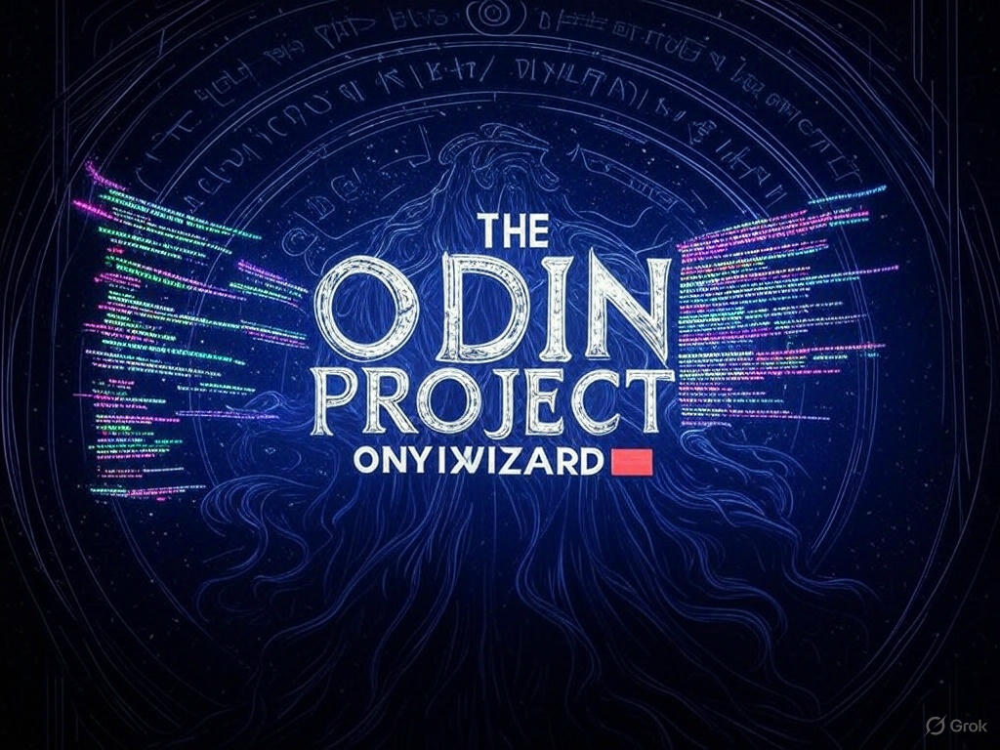

Minimum Operations to Make All Elements Zero
Leetcode Biweekly 156 — We are given an array nums of non-negative integers.
Leetcode Biweekly 156 — We are given an array nums of non-negative integers.
A clean, beginner-friendly guide to every supported HTML5 element — block and inline.
Welcome to the journey of transforming a console-based game into a sleek, modular application using MVC architecture.
Learn how to rotate arrays in place without using extra space — like a pro!
Explore Python’s typing paradigms — Duck Typing and Gradual Typing — in a fun and interactive way.
Break down the core concepts of HTML including elements, tags, attributes, formatting, and version control.
The goal is to find two elements in an array whose sum is closest to zero.
Given an array and a target sum, determine if there exist two distinct indices such that their sum equals the target.
Building strong logical thinking is essential for any programmer or problem solver.